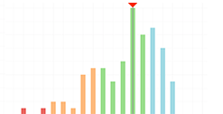
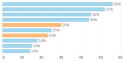
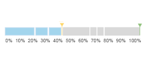

{% extends 'base.html' %}
{% load static %}
{% block content %}
    <div class="d-flex justify-content-center flex-wrap">
		<div class="UnDashboardCard" onclick="window.location='/courses/{{ settings.DEFAULT_COURSE_ID }}/grades/';">
			<div id="Undashboard_GradeTool" class="UnDashboardCard_Header"> 
		     </div>
			<div class="UnDashboardCard_Title">
				Grade Distribution
			</div>
			<div class="UnDashboardCard_Description">
				See where your grade sits within the course grade distribution.
			</div>
		</div>

		<div class="UnDashboardCard" onclick="window.location='/courses/{{ settings.DEFAULT_COURSE_ID }}/view_file_access_within_week/';">
			<div id="Undashboard_FileTool" class="UnDashboardCard_Header">
				
		</div>
			<div class="UnDashboardCard_Title">
				File Access
			</div>
			<div class="UnDashboardCard_Description">
				See what files your peers are reviewing.
			</div>
		</div>

		<div class="UnDashboardCard" onclick="window.location='/courses/{{ settings.DEFAULT_COURSE_ID }}/assignments/';">
			<div id="Undashboard_AssignmentTool" class="UnDashboardCard_Header">
    	     </div>
			<div class="UnDashboardCard_Title">
				Assignment Planning
			</div>
			<div class="UnDashboardCard_Description">
				See what assignments have the greatest impact on your grade.
			</div>
		</div>
	</div>
{% endblock %}